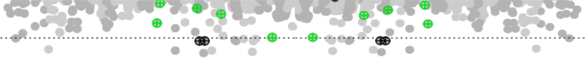

cNMTF is a data fusion framework for prioritising reliable associations between single nucleotide variants (SNVs) and diseases. In this webpage you will find the step-by-step process to run the algorithm on your own data using R scripts.
Install the cnmtf package directly from the github repository. This process requires the devtools package :
install.packages("devtools")
devtools::install_github("lgl15/cnmtf")You can check the development version of this R package on Github.
The cnmtf package provides four categories of functions for preprocessing data, clustering, scoring SNVs and comparing results.
Preprocessing functions:
These functions will help you to create the inputs for the algorithm.
Factorisation functions:
Main functions to integrate the input data, generate the low-dimensional matrices and find consensus clusters.
Scoring functions:
A set of functions to score SNVs and prioritise significant SNV-trait associations from the low-dimensional matrices.
Comparing functions:
Auxiliary functions to compare your results across different settings of the algorithm.
Luis G. Leal, Alessia David, [NFBC investigators], Clive Hoggart, Michael J.E. Sternberg. (2018) Prioritisation of disease-associated variants in cohorts of diverse ancestry using a matrix factorisation framework.
Corresponding author:
Luis G. Leal, lgl15@imperial.ac.uk
Centre for Integrative Systems Biology and Bioinfomatics (CISBIO)
Department of Life Sciences
Imperial College London
You must start by preparing Your input data.